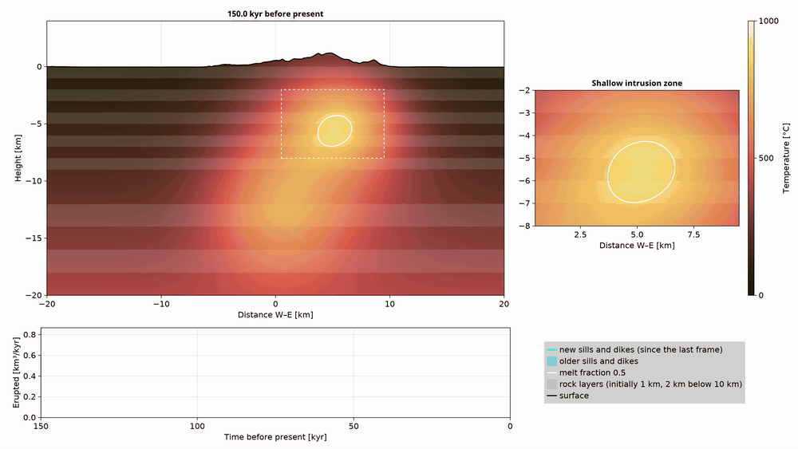
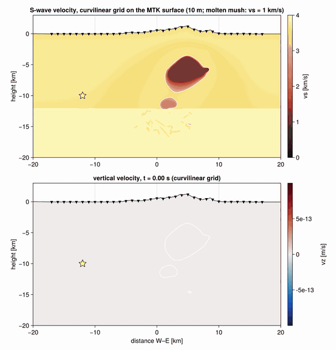

We held our 10th anniversary ∂GPU4GEO Julia hackathon on November 23-27, 2026 in Black Forest (DE), focussing on a wide range of Julia topics. Hereafter a glimpse into the progress made by some participants on various Julia-related projects.
MagmaThermoKinematics.jl update
Boris Kaus & Pascal Aellig
Strictly speaking this wasn't during the Hackathon, but somewhat before. MagmaThermoKinematics is our Julia package to simulate the thermal evolution of magmatic systems. We have given it a substantial revamp, switched to KernelAbstractions, added various parameterisations such as convective cooling when a magma body is mostly molten, added an eruption parameterisations which removes magma if the conditions are right, track the motion of the free surface (and hist rock) during magma injection/extraction, and added an implicit enthalpy based, energy conserving, numerical solver (allowing for larger timesteps). Oh yes, and we performed the highest resolution simulation ever for a volcano (resolving the whole crust with a 2.5 m grid spacing in 2D and 50m in 3D). In 2D, that allows resolving 10m thick dikes and sills (natural lengthscales). A manuscript was send to JOSS with more details.

MantleFabric.jl: adding ODFTEX
Boris Kaus
MantleFabric.jl was started during the last hackathon as a Julia translation of PyDRex, which predicts how olivine crystals align in a deforming mantle and hence the seismic anisotropy we can expect from a geodynamic model (following the widely-used DRex method of Neil Ribe). The Julia version is more than three orders of magnitude faster than the Python one, also computes finite strain tensors, and can post-process 3D LaMEM simulations. During this hackaton, we have expanded it to include the new ODFTEX method of Ribe, Faccenda & VanderBeek (2026) (#PR 4). Instead of tracking thousands of individual grains, ODFTEX evolves a continuous orientation distribution with a single recrystallisation parameter, which makes it faster and free of sampling noise. In a 2D convection test with 9600 aggregates both methods predict nearly the same anisotropy, but ODFTEX was about 20 times faster. Switching between the two is a single keyword (method = :drex or method = :odftex), and the documentation reproduces the key figures of both papers.
SeismicWavePC.jl: a new julia code to simulate seismic waves and do full-waveform inversion on (parallel) GPUs
Boris Kaus and Ludovic Raess
We released SeismicWavePC.jl, a pure Julia package for seismic waves in 2D and 3D visco-elastic media and for full-waveform inversion (FWI). It runs on CPU threads, on NVIDIA, AMD and Apple GPUs, and with MPI. It started as a port of the Fortran code OpenSWPC, whose seismograms it reproduces to round-off. It handles topography, oceans, attenuation, VTI anisotropy, PML boundaries and teleseismic plane waves, and takes any model built with GeophysicalModelGenerator.jl, such as thermal models of magmatic systems with MAGEMin velocities. It also computes exact adjoint gradients and Born modelling, and plugs into Optim.jl and Turing.jl for deterministic and Bayesian inversion.
On the elastic Marmousi2 benchmark (5 m grid, 2.4 million cells, 5317 time steps), our code on 12 CPU threads is as fast as Devito (5.3 s vs 5.2 s). On a laptop GPU (Apple Metal) it takes 2.7 s, 6× faster than OpenSWPC on 12 MPI ranks. A misfit gradient takes 22 s on the GPU, 18× faster than SeismicWaves.jl. For accuracy, we checked the seismograms against OpenSWPC, SPECFEM2D, analytical solutions (to 0.1–0.5 %) and Devito, which converges to our seismograms as its grid is refined. Compared to Devito we lack higher-order (>4) stencils and tilted anisotropy, but we offer elastic gradients, topography and everything in Julia. Here are waves from an earthquake below a volcano:

GeophysicalModelGenerator.jl: giving the gravity solver a bit of love
Boris Kaus
GeophysicalModelGenerator.jl v0.10.1 comes with a much extended gravity code (docs). voxel_grav computes gravity anomalies and their horizontal gradients from 3D density models: on a flat Earth (CartData) or on the reference ellipsoid (GeoData), at the grid columns or at arbitrary stations such as survey points, and on grids with variable spacing. New helpers compute normal gravity (GRS80) and simple and complete Bouguer corrections, so you can go from observed gravity to Bouguer anomalies. voxel_grav_adjoint computes the sensitivity of the anomaly to the density, which makes it easy to plug GMG models into Julia's inversion ecosystem. The docs work through least-squares inversions with Krylov.jl and Optim.jl, and probabilistic (Hamiltonian Monte Carlo) inversions with Turing.jl and AdvancedHMC.jl. With the optional KernelAbstractions.jl backend, the same code also runs on all CPU threads or on a GPU (CUDA, AMD or Apple Metal).
And yes it is fast. Every cell is treated as a point mass plus its quadrupole term, and cells close to a station are subdivided adaptively. We compared it with Harmonica, SimPEG, GMT gravprisms, gravmagsubs (Fortran) and Tesseroids (C) on the same model with 10,201 stations above 300,000 prisms. GMG agrees with their exact prism formulas to 2×10⁻⁶ of the maximum anomaly, far below the precision of gravity data. On a single CPU core it takes 3 s, compared with 33 s for SimPEG and 109–240 s for the other codes: 11–80 times faster. On 16 threads, GMG is 3–18 times faster than the other parallel codes, and on the GPU of an Apple M4 Max the model takes 0.27 s. For tesseroids on a sphere, GMG is about 35 times faster than Harmonica and Tesseroids on a single core. The full benchmark, including its setup, is in the documentation.